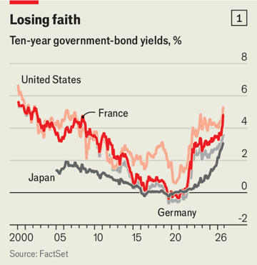
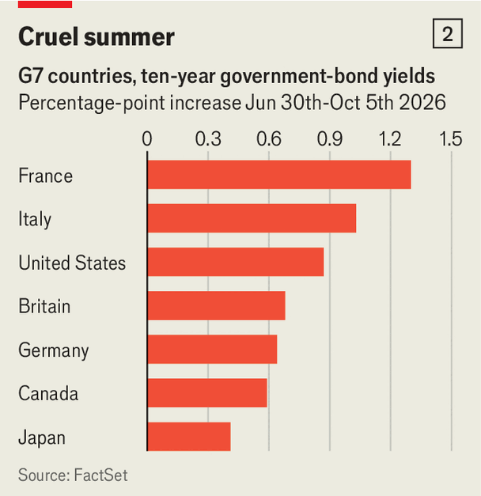
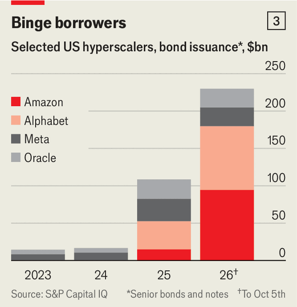

事实证明，“永远”只是暂时的。在2010年代的大部分时间里，经济学家担心利率会因储蓄过多、投资不足而无限期维持在接近零的水平。突然间，情况完全反转了。发达经济体的借贷成本正在飙升，各国政府开始冒汗。

chart: the economist
10月5日，美国十年期国债收益率突破5.3%，创20多年新高。即便在日本这个长期与近零利率划等号的国家，十年期收益率也自1996年以来首次升破3%。发达经济体的十年期国债收益率中位数如今为4%，是15年多来的最高水平，比2015至2019年的平均水平高出逾2.5个百分点（见图表1）。一个新的利率环境正在形成。
政府债券的抛售——价格下跌时收益率上升——近几个月明显加速。自6月底以来，法国十年期收益率上升约1.3个百分点，意大利上升1个百分点（见图表2）。这些更高的借贷成本正与发达经济体接近历史峰值的债务水平迎面相撞。政府欠得越多，高利率的杀伤力就越大。
几乎所有地方的收益率都很高，但原因往往不同，危险程度也不同。高能源价格推高全球通胀，迫使央行维持较高利率。在美国，强劲的增长和人工智能投资热潮创造出对资本的巨大需求。而在一些地方，财政状况恶化和民粹主义政治让投资者对政府债务更加警惕。政客们正在与灾难调情。增长疲弱而债务高企的国家风险最大。

chart: the economist
美国经济一再证明比投资者预期的更强。当企业、消费者和政府想要购买的东西超过经济能够轻松提供的量时，央行必须维持较高利率以抑制这种热情。但即便借贷成本处于数十年来最高，经通胀调整后，经济仍在轰鸣前行。一项衡量国内私人需求的广义指标在第二季度折年率增长4.6%。亚特兰大联储的“即时预测”显示，第三季度GDP折年率增长3.7%。
9月23日，标普全球采购经理人指数（一项覆盖制造业和服务业活动的调查）的初值显示，扩张速度为2021年7月以来最快，远超预期。美国国债大幅下跌，十年期收益率跳升0.15个百分点，为年内最大单日涨幅。市场正在消化这样一种可能性：美联储将不得不更长时间维持较高利率。
对高利率的韧性部分源自人工智能热潮，它推动了股市上涨。明尼阿波利斯联储的经济学家用一个经验法则——股票财富每增加一美元，支出增加三美分——估算，人工智能热潮每年为消费贡献GDP的0.5%至1%。日本也有类似效应，日本央行表示，人工智能驱动的资产价格上涨可能提振了需求。
人工智能还在制造对资本的巨大新需求。在美国，通常对利率格外敏感的企业投资在第二季度折年率增长9%，人工智能建设是重要驱动力。五大“超大规模云服务商”——Alphabet、亚马逊、Meta、微软和甲骨文——上半年资本投资支出约3300亿美元。高盛预计它们今年的支出将达到约8000亿美元，2027年达1.2万亿美元，超过美国GDP的3%。
这股建设热潮正在蔓延到美国以外。去年，数据中心占全球宣布的新建绿地投资（即从零开始新设的项目）的五分之一以上。咨询公司普华永道预计，到2030年底，数据中心相关支出将达到约5万亿美元。所有这些支出都需要大量借贷。

chart: the economist
人工智能热潮的初期阶段主要由科技巨头的庞大现金流支撑。如今它们开始转向债务融资。超大规模云服务商今年迄今已发行2300亿美元债券，是去年全年的两倍（见图表3）。在整个更广泛的人工智能行业，高盛估计到8月初已发行近5000亿美元债务。
随着人工智能投资吸收更多全球储蓄，借贷成本上升。宾夕法尼亚大学的杰西卡·瓦赫特和投资公司Point72的乔纳森·瓦赫特估计，仅人工智能热潮一项就可能把美国的实际利率推高约0.5个百分点。而人工智能并非唯一渴求资本的行业。例如，美国电力公司计划在未来五年投资约1.4万亿美元。
因此在今天的美国，投资机会并不匮乏。债券市场反映了这一转变。过去六个月，十年期通胀保值国债的收益率上升约1个百分点，而长期通胀预期几乎没有变化。投资者押注，即便通胀降温，借贷成本仍将维持高位。
美国国债收益率上升会波及全球债券市场。当美国国债支付更高利息时，其他债券若不提供更高收益率，就会变得不那么有吸引力。这往往会推高其他地方的借贷成本。
与人工智能相关的借贷也在直接给美国以外的债券市场带来压力。五大超大规模云服务商目前占非金融企业新发行的欧元计价债券的近10%。据报道，一些欧洲企业为避免付出更高成本，会刻意避开与它们同日发债。在日本，人工智能投资热潮同样助推企业借贷激增。债券发行量创下纪录，日本投资巨头软银大量举债为其人工智能雄心融资，也起了助推作用。
伊朗战争引发的能源冲击，进一步放大了人工智能热潮对债券市场的影响。霍尔木兹海峡数月的中断使能源价格居高不下。原油比战前贵了约40%。天然气和化肥也更贵。欧洲和亚洲的能源进口国受害最深。在美国和以色列开始轰炸之前，国际货币基金组织预计全球通胀将从去年的4.1%降至今年的3.8%。此后它已把今年的预测上调至4.7%。
央行通常可以把一次性的能源冲击当作一阵涟漪而忽略。但这一次持续了大半年，而且发生在通胀已高企五年之后，这就增加了更高能源成本传导到其他价格、并推高消费者对正常通胀水平认知的风险。在英国，家庭长期通胀预期9月升至4.3%。在日本，一项剔除异常大幅价格波动的通胀指标从2月的1.7%升至8月的2.2%，说明上涨的不只是能源价格。
央行的回应是加息。9月，美联储自2023年以来首次加息。美联储主席凯文·沃什提到“地缘政治事态发展”。欧洲央行近几个月两次加息，日本央行则把主要利率提升至31年来最高。
这标志着戏剧性的转变。战前，市场预期美联储将在2027年3月前降息三次，把目标区间降至2.75%至3%。如今它们预计届时利率将达到4.25%至4.5%——短短七个月内预期转向1.5个百分点。欧洲也出现了类似的180度转弯。投资者原本预期欧洲央行按兵不动。但即便在最近两次加息之后，他们现在预计到2027年年中还会至少再加两次。
短期债券收益率与央行利率预期紧密联动，因此大幅走高。在发达经济体中，两年期收益率平均较年初上升逾1个百分点。长期收益率也随之上升，只是步伐较慢。
推高收益率的最令人不安的力量是政治与财政风险。美国尽管预算赤字约占GDP的6%，且总统唐纳德·特朗普屡次攻击美联储，却仍受到较轻的对待。美联储9月彰显了独立性，沃什不顾总统反对执意加息。衡量期限溢价——投资者持有长期债券所要求的额外回报——的估算今年几乎没有变动。
在其他地方，市场显得不那么宽容。法国是最明显的例子。公共债务接近GDP的120%，今年预算赤字预计达5.4%，为连续第四年超过5%。政治失灵削弱了人们对政府能控制住失控财政的信心。投资者近期要求持有法国十年期债券相对于德国债券的溢价超过1.5个百分点，为2011年以来最阔。法国如今十年期借款成本高于意大利甚至希腊——对一个长期被视为欧洲信用较好借款国之一的国家来说，这是非同寻常的反转。
政府正试图重建信心。10月1日，中间派总理塞巴斯蒂安·勒科尔尼公布了2027年预算，包含430亿欧元（480亿美元）的新增税收和支出削减，其中包括冻结最慷慨的国家养老金这一争议性举措。目标是把明年的赤字降至GDP的5%。但勒科尔尼不掌握议会多数，预计议员们会改写他的方案。
明年的总统大选加剧了市场的不安。民调显示，民粹右翼的玛丽娜·勒庞大幅领先。勒庞承诺用一条“黄金法则”修复公共财政，要求赤字每年至少下降GDP的0.5个百分点。10月6日她给出了具体数字，公布了一项到2032年节省1400亿欧元的计划。
勒庞新获得的财政纪律与她的其他承诺相冲突，例如取消部分劳动者退休年龄的上调。她计划中的许多削减要么含糊，要么过于乐观。国际货币基金组织前首席经济学家奥利维耶·布兰查德说：“不幸的是，既然她已经表明打算从哪里找钱，她的承诺就毫无可信度。”市场的反应略为积极：法国十年期收益率小幅下跌。
民粹左翼的让-吕克·梅朗雄在民调中是勒庞最接近的对手。他解决债务问题的建议是把法国央行持有的那部分债务“烧掉”。债券持有者未来几个月恐怕要提心吊胆。
不安正在越过阿尔卑斯山蔓延。意大利十年期收益率自6月底以来上升约1个百分点，至4.7%左右，既反映了欧洲利率的整体上升，也反映了对一个净债务接近GDP 130%的国家的担忧。焦尔吉娅·梅洛尼的政府预计今年把赤字降到GDP的3%以下，但预计明年会重新升至3.4%，因为意大利要增加国防开支并缓冲能源冲击。明年将举行大选，新成立的极右翼政党“国家未来”的崛起又增添了政治不确定性。
财政担忧也在推高日本的收益率。首相高市早苗正把政府资金投入包括半导体和人工智能在内的庞大投资计划，同时下调食品消费税。她的政府放弃了在支付利息前实现预算盈余的承诺，尽管日本的净债务已达GDP的134%。30年期政府债券收益率升破4.2%，创历史新高。
全球收益率上升将日益加重政府预算的负担。发达经济体的存量债务中，很大一部分仍带着廉价资金时代的低利率。这缓和了高收益率带来的即时冲击——随着政府为旧债再融资并发行新债，冲击才会逐步显现。但清算终将到来。经合组织（成员多为富裕国家的俱乐部）中，三分之一的固定利率政府债务将在2026至2028年间到期。已经消耗该集团GDP 3.3%的利息支出势将攀升。
在美国，代价可能极其巨大。净利息支出已超过每年1万亿美元，比联邦政府的国防开支还多。据无党派智库“负责任联邦预算委员会”测算，如果借贷成本维持在当前水平附近，年度联邦利息支出将在十年内增加近两倍，达到2.8万亿美元。那将超过美国在养老金或老年人医疗上的支出。
如果一个国家经济增长迅速，高债务是可以承受的，因为债务相对于国民收入（以及潜在税收）会缩水。但当利率高于经济增长时，除非政府以增税或减支应对，债务占GDP的比重就会上升。
美国的处境好于许多其他发达经济体，因为增长依然强劲。如果人工智能最终提升生产率，对它的巨额投资还可能带来额外提振。法国和意大利面临的则是增长疲弱与借贷成本高企这一不那么宽容的组合。
在法国，第二季度借贷成本比名义GDP增速高出约2个百分点，是发达经济体中差距最大的。此后差距进一步扩大。意大利面临同样不利的差距，且债务更多（见图表4）。但两国的财政起点截然不同。意大利已实现基础盈余——即不含利息支付的收支——而法国的基础赤字为GDP的2.9%。
随着法国低息债务存量逐步再融资，压力会不断加大。要理解挑战的规模，可以设想它的全部借款都在今天再融资。按当前五年期收益率计算，《经济学人》测算，政府需要实现约占GDP 1.8%的基础盈余，才能让债务不比经济增速更快地增长。法国自本世纪初以来从未实现过如此规模的基础盈余。
要么进行艰巨的财政调整，要么爆发危机。但欧元区应对动荡的准备比过去更充分。与2010年代初欧债危机时相比，银行抵御主权债务冲击的能力更强。欧洲央行如今也有能力更有力地干预债券市场，使自我实现的恐慌更难持续。布兰查德说：“法国不是那种突然没人愿意借钱、你得四处找钱的新兴市场。”但政府收入已超过GDP的一半，进一步大幅增税的空间有限。最可能的结果是长期财政紧缩，疲弱的增长和高企的借贷成本迫使一轮又一轮的支出削减。
在整个发达世界，更高的借贷成本有自我强化的风险。高盛估计，如果当前利率持续，2027年将使美国增长减少略超0.5个百分点。而增长放缓又会让巨额债务更难稳定。如果投资者对政府控制财政的能力失去信心，他们可能要求更高的长期债券溢价，从而进一步推高借贷成本。
更高的利率还可能给私人借款人造成混乱。私人信贷违约已大幅上升。2022年在英国，飙升的国债收益率让许多持有衍生品投资的养老基金措手不及，被迫抛售债券，从而进一步推高收益率，直到英国央行出手干预。不久后在美国，长期债券的亏损击垮了硅谷银行，并引发对其他地区性银行健康状况的恐慌。
收益率上升会造成多大破坏，取决于它们持续多久。如果通胀压力消退，近期涨幅的一部分可能回吐。但回到2010年代的廉价资金世界看起来不太可能。如果收益率维持高位，增税或削减支出终将不可避免。廉价资金曾为政府买来时间。如今更高的收益率正在加速清算的到来。